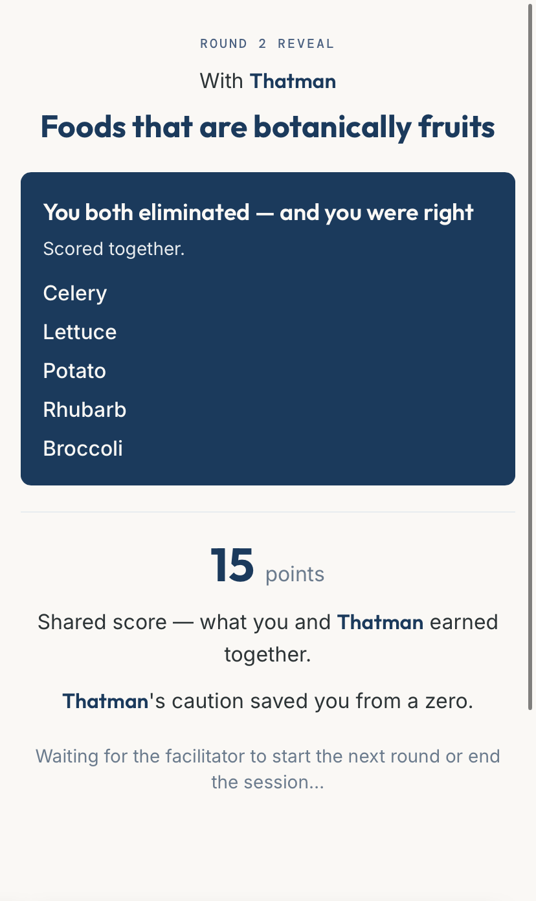

In practice
SessionsMoments run weekly wherever your team already works. Every Season closes with a live, in-person synthesis.
What it actually looks like.


Team connection, practiced weekly
Build a weekly practice that grows connection without you driving it, and future-proof your leadership in the process.
The problem
Why nowDistributed and reorganized work removed the rituals that used to build teams, and nothing deliberate replaced them.
Hallway conversations. Shared history. The rhythm of being in a room together. Distributed, reorganized work quietly took that away, and nothing replaced it. Your team's sense of belonging now depends on you having the energy to manufacture it yourself. Most days, you don't.
of your team's engagement depends on you. Bigger teams and fewer layers of management pushed old rituals off the calendar — the standing check-in, the walk to coffee, the offsite that actually worked. When the team has a problem now, it comes straight to you.
employees report daily loneliness. The inside joke, the hard stretch you got through together, knowing how a teammate will react: none of it forms on its own anymore.
a year, lost to disengagement per 1,000 employees. People don't leave for pay. They leave for belonging, and nothing deliberate replaced what used to build it.
What it does
Fifteen minutesWeekly, wherever your team already works. No facilitator needed to run one.
A Moment is fifteen minutes of your team engaging with each other for no transactional reason at all. Someone poses a question. Everyone answers honestly, guesses how their teammates answered, and finds out together.
What comes back is laughter, surprise, and information about each other that a status meeting will never surface. Because it lands on everyone at the same time, it belongs to the team rather than to whoever happened to run the exercise.

A real reveal, mid-session. Foods that are botanically fruits, scored together.
Why it works
For the sign-offIf HR or your CFO needs to approve this too, they'll recognize the sources.
People are consistently overconfident about how well they understand their teammates, and that confidence doesn't move until they get real information back. That gap — between assuming and finding out — is where every Moment lives. Each one is designed against a specific finding: psychological safety, structured disclosure, the collapse of cross-group collaboration in distributed work.
Fifteen minutes on a weekly schedule. Spaced repetition builds habits; an annual offsite doesn't.
A Season pairs the Moments with a certified coaching partner who turns what surfaces into real conversation.
In practice
SessionsMoments run weekly wherever your team already works. Every Season closes with a live, in-person synthesis.